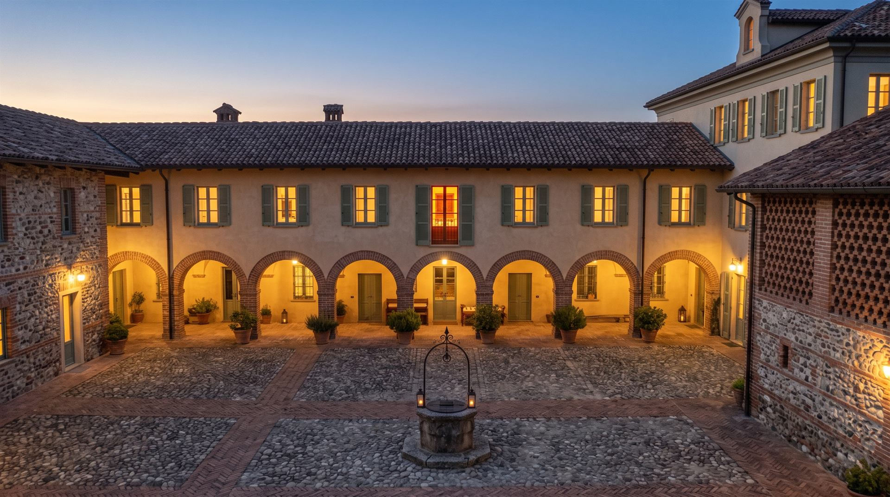
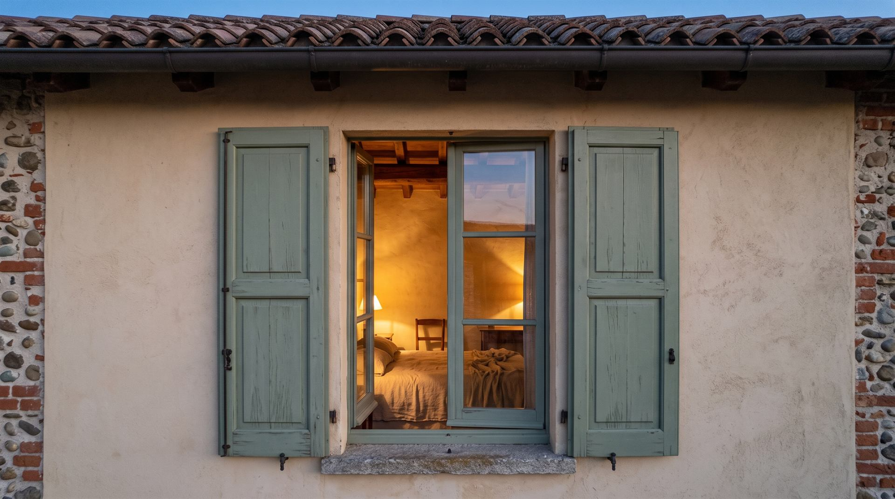
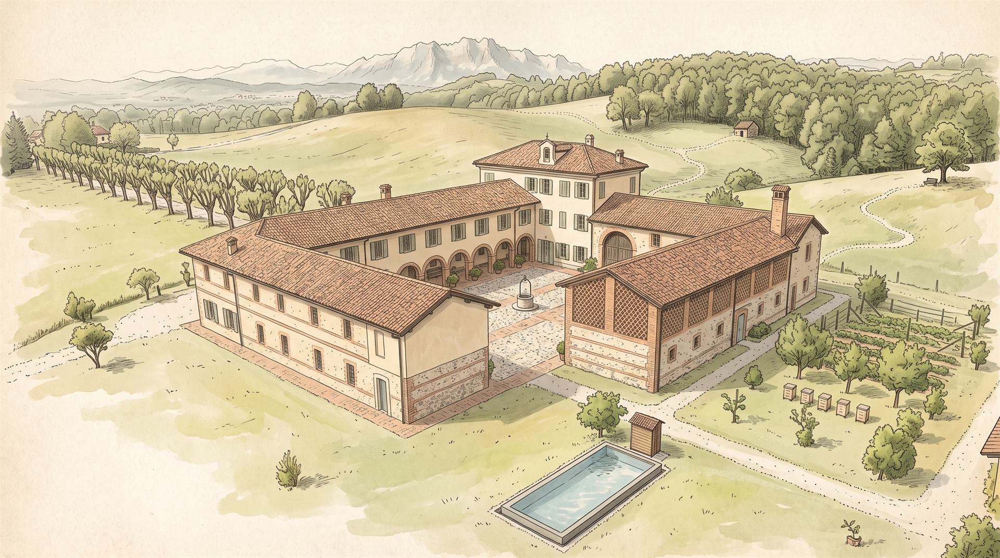

I La Tenuta
Dove il silenzio ha ancora un valore
Una cascina lombarda a corte chiusa, quaranta ettari di prati e boschi, e un modo di vivere che qui non è mai passato di moda: piano.

Pietra, castagno
e calce
Tenuta Briantea nasce attorno a una cascina lombarda a corte chiusa: muri in pietra, portici ad archi, travi di castagno. Intorno, quaranta ettari di prati, boschi e filari di gelsi, gli alberi che per secoli hanno nutrito i bachi da seta della Brianza.
Il restauro ha tenuto quello che c'era e tolto quello che disturbava. Gli arredi sono in legno, fatti da artigiani della zona; i pavimenti sono in cotto recuperato; la luce, la sera, è quella delle lampade basse e dei camini.
Pian pianin, come si dice da queste parti.

Dodici chilometri
di passi lenti
Sentieri segnati che attraversano bosco, prato e frutteto. Nessuno è difficile, nessuno ha fretta di finire. Alla reception trovate le mappe disegnate a mano e, su richiesta, un cestino per il pranzo.
- 01 Il Sentiero dei Castagni Anello in ombra nel bosco, tra muschio e ricci 2,5 km All'alba
- 02 I Prati del Gelso Campi aperti e filari storici fino alla panchina sulle colline 4 km Tutto il giorno
- 03 Il Giro delle Arnie Orto, frutteto e apiario, con assaggio di miele 1,8 km In tarda mattinata
- 04 La Via del Belvedere Salita dolce fino al punto più alto della tenuta 5,5 km Al tramonto

Ogni mese
ha il suo passo
La tenuta cambia con le stagioni, e con lei quello che si fa, si mangia e si guarda. Ecco cosa succede, mese per mese.
- GenCassœula davanti al camino
- FebSi potano i gelsi
- MarIl bosco si risveglia
- AprFiori di sambuco e pan de mej
- MagApre la piscina
- GiuLucciole nei prati
- LugCene sotto il pergolato
- AgoSan Lorenzo al Belvedere
- SetSi raccoglie il miele
- OttCastagne e foglie rosse
- NovNebbie e prime cassœule
- DicFuochi accesi e torta de pan